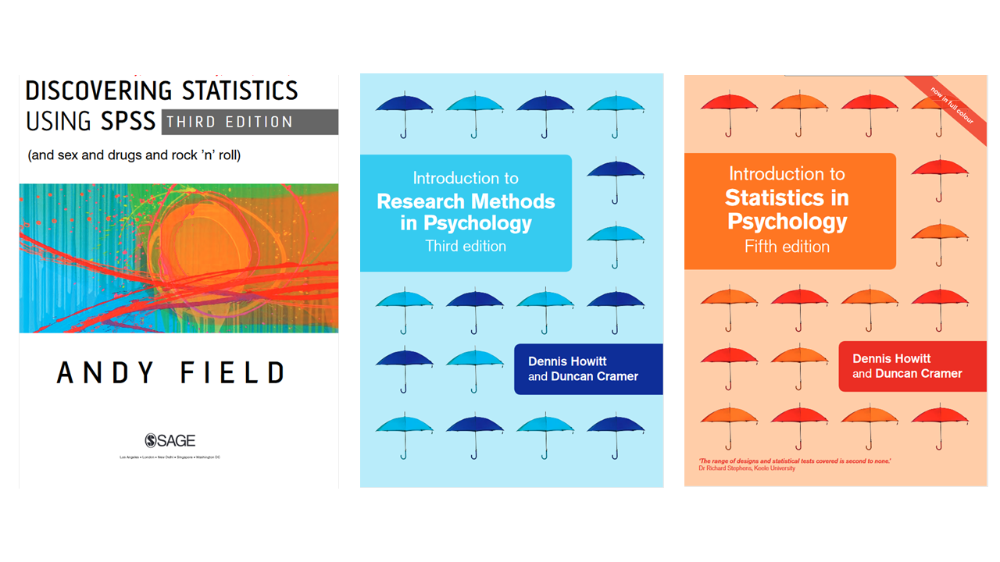

PS4033 Case Study
Blended Learning in PS4033: Research Methods in Psychology
Monday, April 22, 2024
Background
This is a co-taught Spring Semester module that teaches two cohorts of undergraduate students (2nd year BSc students & 3rd year BA students), and one cohort of MA students research methods in Psychology (the MA group have a different module code PS6112, and a separate VLE. This Case Study focuses on PS4033 only). It covers topics relating to research design, operationalisation of variables, validity and reliability of measures, and data analysis. For the undergraduates, it is the final research methods module before their final year and they begin their final year project.
The core texts for the module are: Field (2005), Howitt & Cramer (2007a), Howitt & Cramer (2007b)

The learning outcomes for this module are under revision. The published learning outcomes are not measurable, and are too general. The current learning outcomes and the proposed revised learning outcomes are displayed below:
| Current Learning Outcomes | Proposed Learning Outcomes |
|---|---|
| Cognitive (Knowledge, Understanding, Application, Analysis, Evaluation, Synthesis) Knowledge of the academic discipline of psychology through in-depth interrogation of the concepts and principles of the variety of paradigms and epistemologies across psychological research. Familiarity with the laboratory report and the requirements of scientific report writing. |
Cognitive (Knowledge, Understanding, Application, Analysis, Evaluation, Synthesis) By the end of this module students should be able to: 1. Describe core concepts relating to the academic discipline of psychology. 2. Evaluate the concepts and principles of a variety of paradigms and epistemologies across psychological research 3. Demonstrate competence in research design, analysis, and laboratory report/scientific writing |
| Affective (Attitudes and Values) An appreciation of the role of ethical research in psychology and the development of knowledge more generally. |
Affective (Attitudes and Values) By the end of this module students should 4. Display an appreciation of the role of ethical research in psychology and the development of knowledge more generally |
| Psychomotor (Physical Skills) Data coding and analysis in SPSS Ability to undertake advanced bivariate inferential statistics, assess psychometric properties of tests. Ability to formulate and conduct a research project. |
Psychomotor (Physical Skills) By the end of this module students should be able to: 5. Demonstrate competence in data coding and analysis using appropriate software (e.g., SPSS, R), undertaking advanced bivariate inferential statistics, assessing psychometric properties of tests, and formulating and conducting a research project |
The revised learning outcomes now all begin with an action verb, placing a stronger focus on the learner (Adam, 2006) and a greater emphasis on how students will demonstrate their learning (Adam, 2006; in line with Donnelly & Fitzmaurice, 2005). The revised learning outcomes do not make significant changes to the core competencies that were named in the originally proposed learning outcomes, i.e, the content covered in the module and the expected knowledge and skill acquisition remains largely unchanged, the revised outcomes allow for more measurable assessment of this knowledge and skills.
The proposed learning outcomes span a range of levels of Bloom’s taxonomy of learning objectives (Adam, 2006; Bloom, 1956), in both the cognitive and affective domains (Bloom, 1956; Hadjianastasis, 2017), as well as the psychomotor domain (University of Limerick, 2008).
{kind=link}
Delivery
- Delivery of this module is a combination of:
- face-to-face lectures (also recorded and uploaded online)
- labs completed in during scheduled lab slots and during own time
Assessment
- A 24-hour exam (50%): Administered and submitted through Brightspace in week 12
- Research Project (in 2 parts, 45% total)
- Part 1: Pre-registration (5%): Due Wednesday 20th March
- Feedback provided on pre-registration the week of 1st April
- Part 2: Full Report (40%): Due Wednesday 8th May
- Part 1: Pre-registration (5%): Due Wednesday 20th March
- At Home Labs (5%)
- “In Person” labs: not graded, but all must be submitted to pass the module
Design
- The learning outcomes, the size of the class (>125 across all cohorts), and the overall structure of the module requires a strong blended approach. The delivery of the module is fully blended.
- In addition to these learning and delivery considerations, two key considerations underpinning the blended approach are:
- The on-going COVID-19 pandemic. I continue to teach in a mask, some students may be high risk, and may prefer to avoid coming on campus or attending in-person lectures
- The on-going accommodation crisis, some students may not be living near Limerick, and if they don’t have to be on campus for class this may save them the time/stress of the commute.
{kind=link}
{kind=link}
- I deliver in-person lectures, and these are recorded and uploaded to Brightspace afterwards.
- The “attendance” requirement for the labs is now assessed using the submission of the lab worksheets (as opposed to physical attendance at the lab).
- The 24 hour exam format also facilitates the overall blended approach to the module
Pre-Registration Activity

- A key major change introduced into the module this year is the introduction of a pre-registration activity.
- Students provide an overview of their planned research before carrying out the research. They receive feedback on this before they conduct the research, and complete the main report.
- The benefit of this activity is two fold:
- It reflects recent developments in methods in psychology; pre-registration is an increasingly adopted practice within psychological research, and it is increasingly becoming part of the publishing process. This activity gives students hands-on experience in working in-line with these developments.
- It provides an opportunity for a low-stakes piece of written work that students will receive feed-forward feedback, that can be integrated into their final report (Boud, 2013; Brinko, 1993)
- This is also applies the principle of learning-oriented assessment (Carless, 2007), in line with the view that “assessment, rather than teaching, shapes the experience of learning” (McLean, 2018; Bloxham & Boyd, 2007; see also Ramsden, 1991).
References